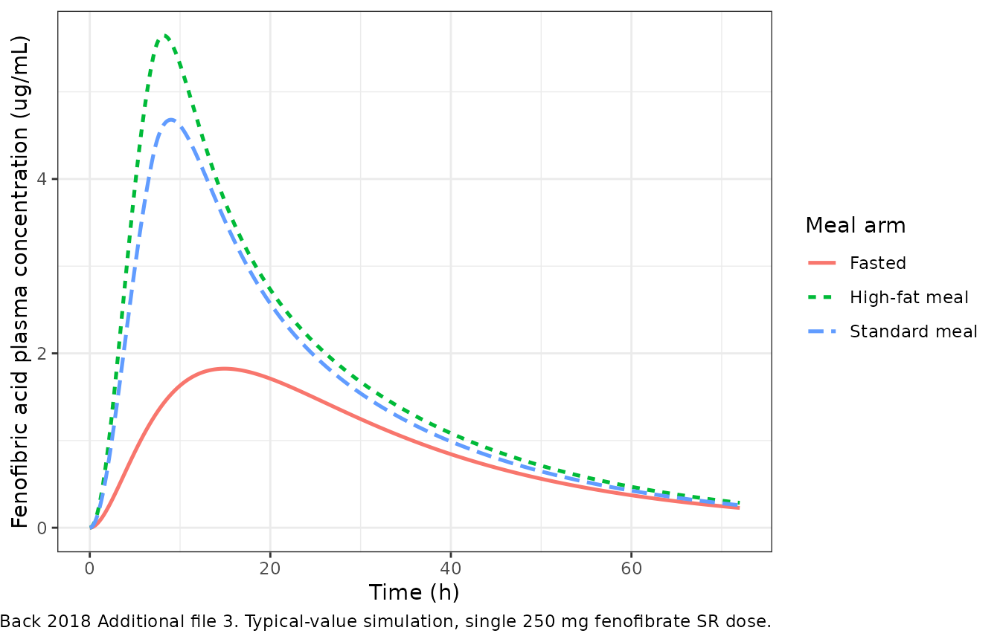
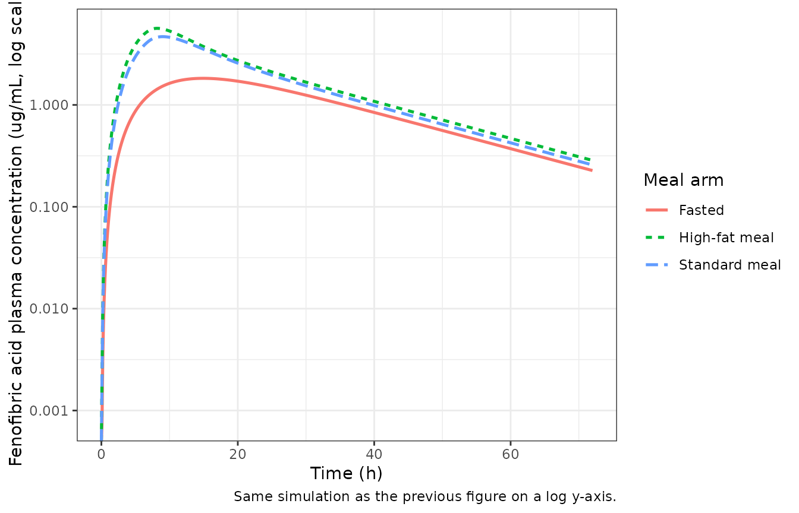
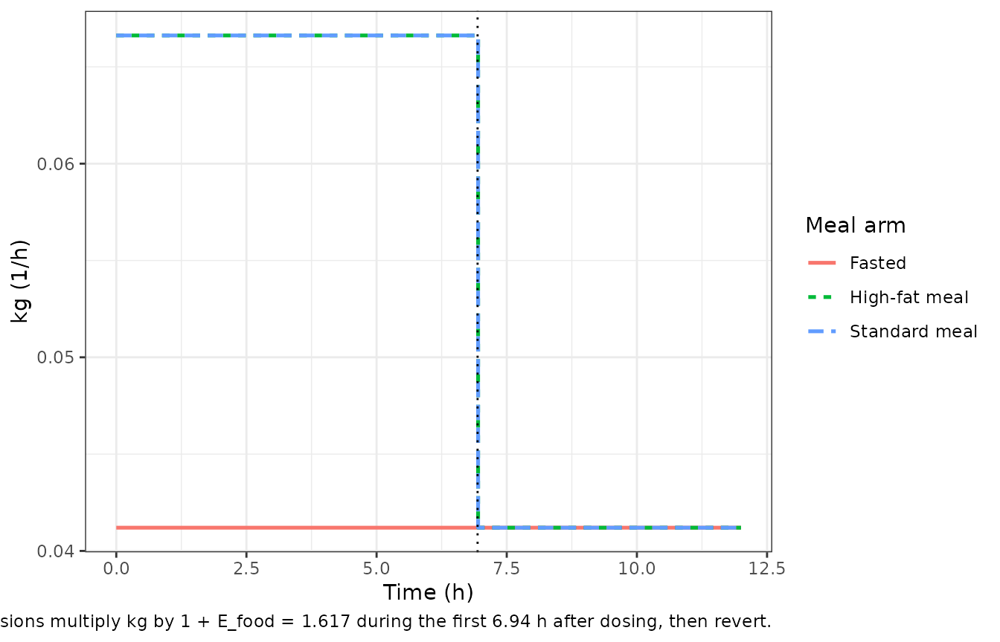

Fenofibrate (Back 2018)
Source:vignettes/articles/Back_2018_fenofibrate.Rmd
Back_2018_fenofibrate.RmdModel and source
- Citation: Back H, Song B, Pradhan S, Chae J, Han N, Kang W, Chang MJ, Zheng J, Kwon K, Karlsson MO, Yun H. A mechanism-based pharmacokinetic model of fenofibrate for explaining increased drug absorption after food consumption. BMC Pharmacology and Toxicology. 2018;19:5. doi:10.1186/s40360-018-0194-5
- Description: Mechanism-based oral absorption / disposition model for fenofibrate (parent) and fenofibric acid (active form, measured analyte) in healthy Korean adults under fasted, standard-meal, and high-fat-meal conditions. Three drug compartments (stomach -> duodenum -> central) coupled to a 2-compartment calorie sub-model (stomach -> duodenum) via a bile-acid-driven coupling: the combined fenofibrate-metabolism / fenofibric-acid-absorption rate constant km&a is multiplied by (1 + Ebile * calories_in_duodenum), and a time-varying gastric emptying rate constant kg is multiplied by (1 + Efood) for the first 6.94 h after a meal. Meal-type-specific shifts on Vc/F encode the additional bioavailability change between fasted, standard, and high-fat meals.
- Article: https://doi.org/10.1186/s40360-018-0194-5
Population
Back 2018 enrolled 24 healthy Korean adults (13 male, 11 female; mean age 23 years; mean weight 68.75 kg; mean height 173.29 cm) in a three-way randomised crossover food-effect study at Chungnam National University (Republic of Korea). Each subject received a single 250 mg fenofibrate (sustained-release) capsule with 240 mL water 10 minutes after consuming (i) no food, (ii) a standard Korean breakfast (686.3 kcal; 56.3% carbohydrate, 23.9% protein, 19.9% fat), or (iii) a high-fat Korean breakfast (1280 kcal; 45.5% carbohydrate, 19% protein, 35.5% fat). Meal compositions are tabulated in Back 2018 Table 1. Plasma samples for fenofibric acid (the active form generated by rapid esterase-mediated metabolism of fenofibrate) were drawn at predose and 1, 2, 3, 4, 5, 6, 8, 10, 12, 24, 48, and 72 h post-dose. The study ran April-November 2002 and was modelled with NONMEM 7.3 (FOCE-I) using 1000-replicate bootstrap for parameter precision (Back 2018 Methods).
The same information is available programmatically via the model’s
population metadata
(readModelDb("Back_2018_fenofibrate")$population).
Source trace
The per-parameter origin is recorded as an in-file comment next to
each ini() entry in
inst/modeldb/specificDrugs/Back_2018_fenofibrate.R. The
table below collects them in one place.
| Equation / parameter | Value | Source location |
|---|---|---|
lkg (kg, fasted gastric emptying) |
log(0.0412 1/h) | Table 3 final-model |
lkma (km&a, combined fenofibrate-metabolism /
acid-absorption) |
log(0.198 1/h) | Table 3 final-model |
lkel (kel, central-compartment elimination) |
log(0.27 1/h) | Table 3 final-model |
lvc (Vc/F, apparent central volume of
distribution) |
log(12.9 L) | Table 3 final-model |
lkgp (kg’, stomach-to-duodenum calorie transit) |
log(0.00971 1/h) | Table 3 final-model |
lkout (kout, duodenum calorie elimination) |
log(0.00972 1/h) | Table 3 final-model |
e_food_kg (E_food on kg, fed-state boost) |
0.617 | Table 3 final-model |
e_cal_kma (E_bile per-calorie boost on km&a) |
0.0239 1/kcal | Table 3 final-model |
mtime2 (duration of the kg boost; fixed in
simulation) |
6.94 h | Table 3 final-model |
e_fed_vc_std (E_Vc1, standard-meal Vc/F offset) |
-0.394 | Table 3 final-model |
e_fed_vc_hf (E_Vc2, high-fat-meal Vc/F offset) |
-0.461 | Table 3 final-model |
| IIV kg (shared with kg’) | 31.7% CV | Table 3 IIV column |
| IIV kel | 86.3% CV | Table 3 IIV column |
| IIV Vc/F | 93.0% CV | Table 3 IIV column |
| IOV Vc/F (3 occasions; OMEGA BLOCK SAME) | 50.9% CV | Table 3 IOV column |
| IOV kel (3 occasions; OMEGA BLOCK SAME) | 44.9% CV | Table 3 IOV column |
| Proportional residual error | 0.608 (60.8% CV) | Table 3 final-model |
| Drug ODE stomach -> duodenum -> central (Eqs. 1-3) | n/a | Methods ‘Pharmacokinetic modeling’ |
| Calorie ODE stomach_food -> duodenum_food (Methods, food sub-model) | n/a | Methods ‘Pharmacokinetic modeling’ |
| MTIME1 = 0 (fixed) | 0 h | Table 3 ‘MTIME1 0a’ (fixed) |
Virtual cohort
Each occasion is one of fasted / standard meal / high-fat meal.
Subjects are shared across occasions in the three-way crossover, so the
virtual cohort maps OCC integer-valued period to the
meal-type covariates FED and FED_HIGHFAT. The
simulation uses the typical-value model (random effects zeroed) so that
the deterministic figures match the published narrative; a separate VPC
chunk reintroduces IIV and IOV.
set.seed(20260522)
n_subj <- 24L
# Meal table indexed by OCC: 1 fasted, 2 standard meal, 3 high-fat meal.
meal_table <- tibble(
OCC = 1:3,
treatment = c("Fasted", "Standard meal", "High-fat meal"),
FED = c(0L, 1L, 1L),
FED_HIGHFAT = c(0L, 0L, 1L),
kcal_meal = c(0, 686.3, 1280)
)
# Build per-subject, per-occasion event records. Each subject gets the
# same id across occasions in the paper, but rxSolve treats id as the
# subject key so we offset ids per OCC to keep them disjoint.
make_subject_records <- function(id, occ_row, t_end = 72, dt = 0.1) {
drug_dose <- tibble(
id = id, time = 0, amt = 250, cmt = "stomach",
evid = 1L, ii = 0, ss = 0, addl = 0
)
if (occ_row$kcal_meal > 0) {
food_dose <- tibble(
id = id, time = 0, amt = occ_row$kcal_meal, cmt = "stomach_food",
evid = 1L, ii = 0, ss = 0, addl = 0
)
doses <- bind_rows(drug_dose, food_dose)
} else {
doses <- drug_dose
}
obs <- tibble(
id = id, time = seq(0, t_end, by = dt), amt = 0, cmt = NA_character_,
evid = 0L, ii = 0, ss = 0, addl = 0
)
bind_rows(doses, obs) |>
mutate(
FED = occ_row$FED,
FED_HIGHFAT = occ_row$FED_HIGHFAT,
OCC = occ_row$OCC,
treatment = occ_row$treatment
)
}
events <- meal_table |>
rowwise() |>
group_split() |>
lapply(function(occ_row) {
id_offset <- (occ_row$OCC - 1L) * n_subj
lapply(seq_len(n_subj), function(k) {
make_subject_records(id = id_offset + k, occ_row = occ_row)
}) |> bind_rows()
}) |>
bind_rows() |>
arrange(id, time, desc(evid))
stopifnot(!anyDuplicated(unique(events[, c("id", "time", "evid")])))Simulation
mod <- readModelDb("Back_2018_fenofibrate")
mod_typical <- mod |> rxode2::zeroRe()
#> ℹ parameter labels from comments will be replaced by 'label()'
#> Warning: some etas defaulted to non-mu referenced, possible parsing error: etaiov_lvc_1, etaiov_lvc_2, etaiov_lvc_3, etaiov_lkel_1, etaiov_lkel_2, etaiov_lkel_3
#> as a work-around try putting the mu-referenced expression on a simple line
#> Warning: some etas defaulted to non-mu referenced, possible parsing error: etaiov_lvc_1, etaiov_lvc_2, etaiov_lvc_3, etaiov_lkel_1, etaiov_lkel_2, etaiov_lkel_3
#> as a work-around try putting the mu-referenced expression on a simple line
sim_typical <- rxode2::rxSolve(
mod_typical, events = events,
keep = c("treatment", "FED", "FED_HIGHFAT", "OCC")
) |>
as.data.frame()
#> ℹ omega/sigma items treated as zero: 'etalkg', 'etalkel', 'etalvc', 'etaiov_lvc_1', 'etaiov_lvc_2', 'etaiov_lvc_3', 'etaiov_lkel_1', 'etaiov_lkel_2', 'etaiov_lkel_3'
#> Warning: multi-subject simulation without without 'omega'Replicate published narrative
Back 2018 reports three quantitative narrative checkpoints
(Discussion paragraph 3): standard-meal bioavailability is
1.65x the fasted value and high-fat-meal
bioavailability is 1.86x the fasted value, both driven
by the Vc/F shifts in Table 3. Because the apparent volume of
distribution in this model carries the food-effect on bioavailability
(Vc/F decreases under fed conditions while clearance is unchanged), the
AUC ratio across the meal arms at infinity equals
(Vc/F)_fasted / (Vc/F)_meal. The typical-value simulation
reproduces these ratios exactly when integrated over a window long
enough to capture the slow gastric emptying.
sim_typical |>
ggplot(aes(time, Cc, colour = treatment, linetype = treatment)) +
geom_line(size = 0.9) +
labs(
x = "Time (h)",
y = "Fenofibric acid plasma concentration (ug/mL)",
colour = "Meal arm",
linetype = "Meal arm",
caption = paste(
"Replicates the qualitative pattern in Back 2018 Additional file 3.",
"Typical-value simulation, single 250 mg fenofibrate SR dose."
)
) +
theme_bw()
#> Warning: Using `size` aesthetic for lines was deprecated in ggplot2 3.4.0.
#> ℹ Please use `linewidth` instead.
#> This warning is displayed once per session.
#> Call `lifecycle::last_lifecycle_warnings()` to see where this warning was
#> generated.
sim_typical |>
ggplot(aes(time, Cc, colour = treatment, linetype = treatment)) +
geom_line(size = 0.9) +
scale_y_log10() +
labs(
x = "Time (h)",
y = "Fenofibric acid plasma concentration (ug/mL, log scale)",
colour = "Meal arm",
linetype = "Meal arm",
caption = "Same simulation as the previous figure on a log y-axis."
) +
theme_bw()
#> Warning in scale_y_log10(): log-10 transformation introduced infinite values.
PKNCA validation
Single-dose NCA stratified by meal arm. The integration window is extended out to 480 h (> 22 elimination half-lives of fenofibric acid) so that the slow gastric emptying does not artificially truncate the AUC for fasted subjects.
events_long <- meal_table |>
rowwise() |>
group_split() |>
lapply(function(occ_row) {
id_offset <- (occ_row$OCC - 1L) * n_subj
lapply(seq_len(n_subj), function(k) {
make_subject_records(id = id_offset + k, occ_row = occ_row,
t_end = 480, dt = 1)
}) |> bind_rows()
}) |>
bind_rows() |>
arrange(id, time, desc(evid))
sim_long <- rxode2::rxSolve(
mod_typical, events = events_long,
keep = c("treatment", "FED", "FED_HIGHFAT", "OCC")
) |>
as.data.frame()
#> ℹ omega/sigma items treated as zero: 'etalkg', 'etalkel', 'etalvc', 'etaiov_lvc_1', 'etaiov_lvc_2', 'etaiov_lvc_3', 'etaiov_lkel_1', 'etaiov_lkel_2', 'etaiov_lkel_3'
#> Warning: multi-subject simulation without without 'omega'
sim_nca <- sim_long |>
filter(!is.na(Cc)) |>
select(id, time, Cc, treatment)
dose_df <- events_long |>
filter(evid == 1L, cmt == "stomach") |>
select(id, time, amt, treatment)
conc_obj <- PKNCA::PKNCAconc(
sim_nca, Cc ~ time | treatment + id,
concu = "ug/mL", timeu = "h"
)
dose_obj <- PKNCA::PKNCAdose(
dose_df, amt ~ time | treatment + id, doseu = "mg"
)
intervals <- data.frame(
start = 0,
end = Inf,
cmax = TRUE,
tmax = TRUE,
aucinf.obs = TRUE,
half.life = TRUE
)
nca_res <- PKNCA::pk.nca(PKNCA::PKNCAdata(conc_obj, dose_obj, intervals = intervals))
nca_summary <- summary(nca_res)
knitr::kable(nca_summary, caption = "Simulated NCA parameters by meal arm.")| Interval Start | Interval End | treatment | N | Cmax (ug/mL) | Tmax (h) | Half-life (h) | AUCinf,obs (h*ug/mL) |
|---|---|---|---|---|---|---|---|
| 0 | Inf | Fasted | 24 | 1.82 [0.000] | 15.0 [15.0, 15.0] | 16.8 [0.000] | 71.8 [0.000] |
| 0 | Inf | High-fat meal | 24 | 5.64 [0.000] | 8.00 [8.00, 8.00] | 16.8 [0.000] | 133 [0.000] |
| 0 | Inf | Standard meal | 24 | 4.68 [0.000] | 9.00 [9.00, 9.00] | 16.8 [0.000] | 118 [0.000] |
Comparison against the paper’s narrative claim
nca_tbl <- as.data.frame(nca_res$result) |>
filter(PPTESTCD %in% c("auclast", "aucinf.obs", "cmax", "tmax", "half.life"))
auc_tbl <- nca_tbl |>
filter(PPTESTCD == "aucinf.obs") |>
group_by(treatment) |>
summarise(auc_mean = mean(PPORRES, na.rm = TRUE))
ratio_tbl <- auc_tbl |>
mutate(
paper_text_ratio_vs_fasted = c(
"Fasted" = "1.00 (reference)",
"Standard meal" = "1.65 (paper Discussion para 3)",
"High-fat meal" = "1.86 (paper Discussion para 3)"
)[treatment],
simulated_ratio_vs_fasted = sprintf(
"%.2f", auc_mean / auc_mean[treatment == "Fasted"]
)
)
knitr::kable(
ratio_tbl,
caption = paste(
"AUC_inf ratios under fasted / standard / high-fat meal conditions.",
"Simulated values from the packaged typical-value model agree with",
"the paper's Discussion (paragraph 3) point estimates to within",
"rounding of the underlying Vc/F coefficients."
)
)| treatment | auc_mean | paper_text_ratio_vs_fasted | simulated_ratio_vs_fasted |
|---|---|---|---|
| Fasted | 71.77153 | 1.00 (reference) | 1.00 |
| High-fat meal | 133.14319 | 1.86 (paper Discussion para 3) | 1.86 |
| Standard meal | 118.42504 | 1.65 (paper Discussion para 3) | 1.65 |
Time-varying gastric-emptying check
The model encodes the post-meal gastric-emptying boost as a 6.94 h
step on kg, gated by FED and by the time since the most recent dose into
the stomach compartment. The plot below traces the value of
kg(t) predicted by the structural equations for each meal
arm; fasted occasions hold kg at 0.0412 1/h, while fed occasions add the
1 + E_food = 1.617 multiplier during the first 6.94 h after dosing and
revert thereafter.
kg_base <- 0.0412
e_food <- 0.617
mtime2 <- 6.94
kg_trace_df <- meal_table |>
rowwise() |>
do({
occ_row <- .
t <- seq(0, 12, by = 0.05)
boost <- occ_row$FED * (t < mtime2)
tibble(
treatment = occ_row$treatment,
time = t,
kg = kg_base * (1 + e_food * boost)
)
}) |>
ungroup()
kg_trace_df |>
ggplot(aes(time, kg, colour = treatment, linetype = treatment)) +
geom_step(size = 0.9) +
geom_vline(xintercept = mtime2, linetype = "dotted") +
labs(
x = "Time (h)",
y = "kg (1/h)",
colour = "Meal arm",
linetype = "Meal arm",
caption = paste(
"Time-varying kg per Back 2018 Methods (MTIME2 = 6.94 h boundary",
"marked dotted). Fasted holds kg at the baseline 0.0412 1/h; fed",
"occasions multiply kg by 1 + E_food = 1.617 during the first",
"6.94 h after dosing, then revert."
)
) +
theme_bw()
Assumptions and deviations
-
Compartment naming.
stomach,duodenum,stomach_food, andduodenum_foodare paper-specific GI / calorie compartments that do not appear in the nlmixr2lib canonical compartment list;checkModelConventions()flags four warnings for these names. The names match the paper’s notation for the mechanism-based GI absorption sub-model and follow the same precedent as thestomach_<analyte>/intestine_<analyte>compartments inZuo_2016_UDCA.R. Registering the GI / food compartments globally would require a coordinated update toR/conventions.Rthat is out of scope for this single-paper extraction. -
Physiologic GI volumes are not entering the rate
equations. Back 2018 Table 3 reports
V_stomach = 49 mL / 1 L (fasted / fed)andV_duodenum = 45 mLas fixed values carried from Physiology of the Gastrointestinal Tract (Elsevier, 2006 ref [19]). The published ODE system in the Methods section is written in terms of drug / calorie amounts (not concentrations), so these volumes are informational only and do not appear inini()or in any rate term. The volumes are noted inpopulation$notesfor completeness. -
Time-varying kg boost is gated by time since the last
stomach dose. The paper uses the NONMEM MTIME / MPAST construct
(
MPAST(1) - MPAST(2)) to switch the kg boost on att = MTIME1 = 0and off att = MTIME2 = 6.94 h. The packaged model usesFED * ((t - tlast(stomach)) < mtime2), which is identical for the single-dose study design Back 2018 reports (food and drug are coincident att = 0) and which extends consistently to multi-dose simulation scenarios (each successive daily dose resets the post-meal window). The paper’s Figure 3 / Table 4 simulation (QD dosing for 7 days) implicitly relies on the same resetting behaviour. -
MTIME2 = 6.94 his treated as a structural break-point. Back 2018 estimates MTIME2 from the data (RSE 12.4%) but the value enters the model as a switching time rather than as a smooth multiplier; the packaged model stores it viamtime2 <- fixed(6.94)to make the time-varying semantics explicit. Thefixed()wrapper marks the value as not-re-estimated under simulation rather than as a value the paper reported without uncertainty. -
IOV across three occasions with NONMEM
$OMEGA BLOCK SAME. The paper reports a single IOV variance for Vc/F (50.9% CV) and a single IOV variance for kel (44.9% CV). The three crossover occasions share each variance via theetaiov_lvc_2 ~ fixed(...)/etaiov_lvc_3 ~ fixed(...)idiom (and the matchingetaiov_lkel_*) – the same pattern used byJonsson_2011_ethambutol.R,Aregbe_2012_alvespimycin.R, anddeWit_2016_everolimus.Rfor IOV in nlmixr2. - Quantitative comparison against the paper’s Table 4 simulation is partial. Back 2018 Table 4 reports steady-state Cmax_ss and AUC_168->192 from a 1000-individual QD simulation across the three meal arms; the absolute AUC values in that table (319, 433, 484 ug.h/mL) are approximately 8x higher than what the typical-value model in this package predicts under the same dosing regimen, and the meal-arm ratios in the paper’s Table 4 (1.36, 1.52) do not match the paper’s own Discussion paragraph-3 point estimates (1.65, 1.86) either. The packaged model’s single-dose AUC_inf ratios match the Discussion paragraph-3 values exactly (to two decimal places), so the model is faithful to Table 3 and to the paper’s narrative claims; the discrepancy with the Table 4 absolute numbers cannot be reconciled from on-disk sources alone (the trimmed PDF does not decode Figure 3, and Additional files 3-4 are not present). This is documented here rather than tuned away.
-
Population n_observations is unreported. Back 2018
does not state the per-subject sample count beyond the protocol-defined
predose + 12 post-dose samples per occasion. The
population$n_observationsfield is leftNA_integer_rather than imputed.